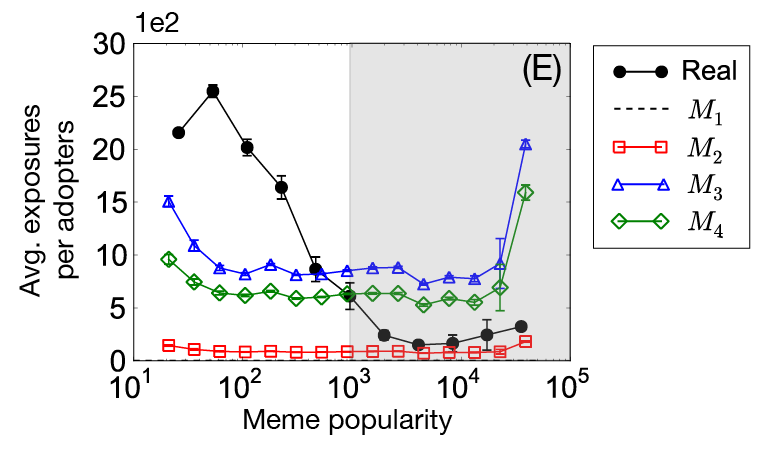
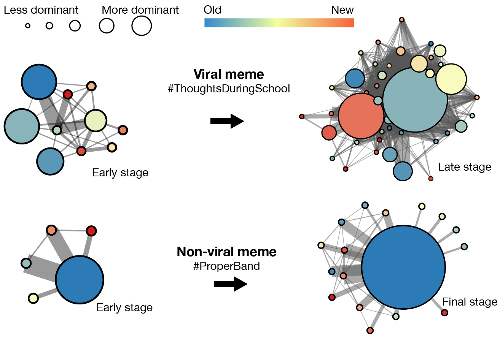
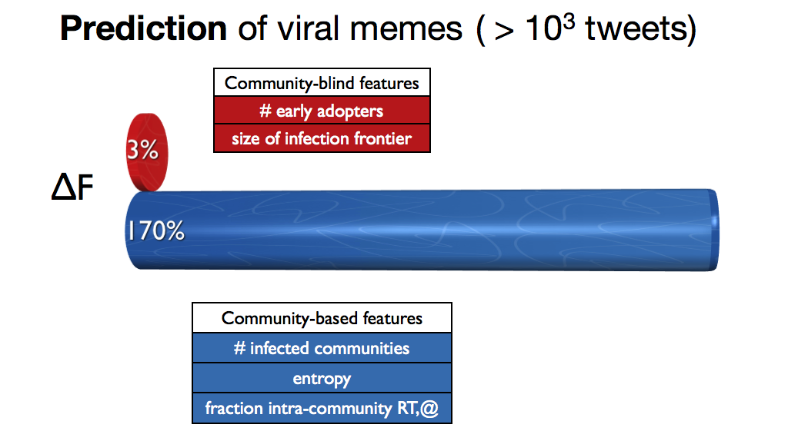

A companion webpage to the paper by Lilian Weng, Filippo Menczer, and Yong-Yeol Ahn
"Can we understand and predict virality of memes by leveraging network structure?"
Paper online SupplementaryDowload: Slides, Dataset (Download | Readme)
Cited As: Lilian Weng, Filippo Menczer, and Yong-Yeol Ahn. Virality Prediction and Community Structure in Social Networks. Nature Scientific Report. (3)2522, 2013.
Click!
We are living in attention economy. Corporations and political campaigns spend enormous resources to fight for limited attention of people to make their messages and products viral. Then, can we understand why certain things go viral? Further, can we predict what will go viral?
We propose that network communities allow us to predict viral memes. By analyzing Twitter hashtags, we show that:
The video Gangnam Style was uploaded to Youtube on July 2012, and obtains over 1.4 billions views within 8 months becoming the most viewed video in history on Youtube! Considering the world population, only 7 billions, the video Gangnam gains a huge success: it is viewed by one of every five people on earth! Is it possible for us to predict its tremendous success at the very beginning?
Communities cripple the global spread because they act as traps for random flows.
Complex contagions are sensitive to social reinforcement. A few concentrated adoptions inside highly clustered communities can induce many multiple exposures.
Communities capture homophily as people sharing similar characteristics naturally establish more edges among them. Thus we expect similar tastes among community members, making people more susceptible to memes from peers in the same community
Do all memes behave like complex contagions?
No! While the the majority of memes are not viral, viral memes behave differently. Their concentration in the empirical data is the same as that of the simple cascading model (see the gray areas). Community structure does not seem to trap successful memes as much as others. These memes behave like simple contagions, permeating through many communities.
To further distinguish viral memes from others in terms of types of contagion, we explicitly estimate the strength of social reinforcement by, for a given meme, measuring the average number of exposures that each adopter has experienced before the adoption.
Viral memes require as little reinforcement as the simple cascading model, while non-viral memes need as many exposures as models that consider social reinforcement or homophily. We arrive at the same conclusion: viral memes behave like simple contagions rather than complex ones.
The above findings imply an intriguing possibility: high concentration of a meme hint that the meme is only interesting to certain communities, while weak concentration imply a universal appeal and therefore might be used to predict the virality of the meme.
See the following figure illustrates how the diffusion pattern of a viral meme differs from that of a non-viral one, when analyzed through the lens of community concentration.
We then apply a machine learning algorithm, random forests, to predict which memes can go viral in the future based on the first 50 messages of each meme. The community-based features used in the classifier significantly improve the prediction outcomes. In our experiments, we are able to detect memes that are viral after 4 weeks only using the knowledge about the first 50 tweets of each meme. For example, when the virality is estimated by the number of meme adopters, 60-70% of our predictions are accurate and 50-70% of actually viral memes are reported.
We can see huge potentiality for applications in social media marketing --- social networks could give better advice to their users as to which posts are likely to give best advertising Return on Investment (ROI).
Our method is easy to play with. It exploits only network structure, without need to access message content, and can be easily applied to any socio-technical network from a small sample of data.
We believe that many other complex dynamics of human society, from ethnic tension to global conflicts, and from grassroots social movements to political campaigns, could be better understood by continued investigation of network structure.